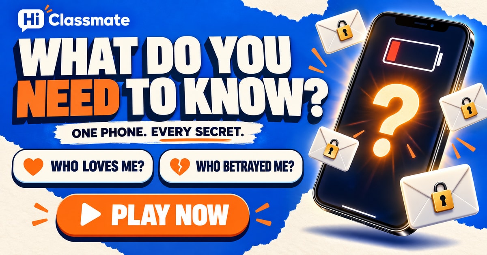

ONE PHONE. EVERY SECRET.
What Do You NEED to Know?
Every secret.
Not enough battery.
Imagine a phone that knows everything.
Each round, you can open only one truth.
Which one would you give up?
BATTERY EMPTY · PATTERN FOUND
Your choices
left a trace.
The phone goes dark. One thing remains: the kind of truth you kept choosing.
Behind every secret was something you wanted to feel sure about.
WHAT YOU WERE REALLY SEARCHING FOR
leaned this way.
YOUR SEARCH HISTORY

Which truth would you spend the last charge on?
Imagine choosing between a confession that never reached you and a conversation you were never meant to see. Or between preventing a future mistake and discovering the life you almost lived.
Eight choices. A pattern of your own.
This story reflects your choices back to you; it does not retrieve anyone’s messages or reveal real people’s secrets. Every answer belongs to one of four themes: affection, trust, agency or unexplored possibilities. No names or personal details are needed.
Each theme appears in four available answers. Your result is the one you chose most often. If themes tie, your latest choice among them decides the headline. The count shows your own choices, not a comparison with other players. Review all eight answers to see the whole pattern.